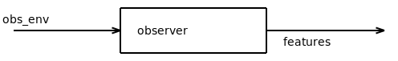
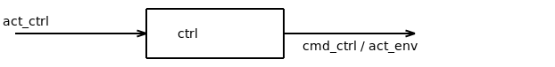

Blocks¶
This method gathers base implementations for blocks to be used in pipeline control design.
It implements:
the concept of blocks that can be connected to a gym environment
the base controller block
the base observer block
- class gym_jiminy.common.bases.blocks.InterfaceBlock(name, env, update_ratio=1, **kwargs)[source]¶
Bases:
Generic[BlockState,BaseObs,BaseAct]Base class for blocks used for pipeline control design. Blocks can be either observers and controllers.
Warning
A block may be stateful. In such a case, _initialize_state_space and get_state must be overloaded accordingly. The internal state will be added automatically to the observation space of the environment.
Initialize the block interface.
It defines some proxies for fast access, then it initializes the internal state space of the block and allocates memory for it.
- ..warning::
All blocks (observers and controllers) must be an unique name within a given pipeline. In practice, it will be impossible to plug a given block to an existing pipeline if the later already has one block of the same type and name. The user is responsible to take care it never happens.
- Parameters:
name (str) – Name of the block.
env (InterfaceJiminyEnv[BaseObs, BaseAct]) – Environment to connect with.
update_ratio (int) – Ratio between the update period of the top-level block and the one of the subsequent lower-level block. The value ‘-1’ to can be used for forcing the update period to match the simulation timestep of the base environment itself.
kwargs (Any) – Extra keyword arguments that may be useful for mixing multiple inheritance through multiple inheritance.
- state_space: Space[BlockState]¶
- env: InterfaceJiminyEnv[BaseObs, BaseAct]¶
- class gym_jiminy.common.bases.blocks.BaseObserverBlock(*args, **kwargs)[source]¶
Bases:
InterfaceObserver[Obs,BaseObs],InterfaceBlock[BlockState,BaseObs,BaseAct],Generic[Obs,BlockState,BaseObs,BaseAct]Base class to implement observe that can be used compute observation features of a BaseJiminyEnv environment, through any number of lower-level observer.
Formally, an observer is a defined as a block mapping the observation space of the preceding observer, if any, and directly the one of the environment ‘obs_env’, to any observation space ‘features’. It is more generic than estimating the state of the robot.
The update period of the observer is the same than the simulation timestep of the environment for now.
Initialize the observer interface.
- Parameters:
- property fieldnames: Mapping[str, StructNested[ValueT]] | Sequence[StructNested[ValueT]] | str¶
Get mapping between each scalar element of the observation space of the observer block and the associated fieldname for logging.
It is expected to return an object with the same structure than the observation space, but having lists of string as leaves. Generic fieldnames are used by default.
{kind=link}
- class gym_jiminy.common.bases.blocks.BaseControllerBlock(*args, **kwargs)[source]¶
Bases:
InterfaceController[Act,BaseAct],InterfaceBlock[BlockState,BaseObs,BaseAct],Generic[Act,BlockState,BaseObs,BaseAct]Base class to implement controller that can be used compute targets to apply to the robot of a BaseJiminyEnv environment, through any number of lower-level controllers.
Formally, a controller is defined as a block mapping any action space ‘act_ctrl’ to the action space of the subsequent controller ‘cmd_ctrl’, if any, and ultimately to the one of the associated environment ‘act_env’, ie the motors efforts to apply on the robot.
The update period of the controller must be higher than the control update period of the environment, but both can be infinite, i.e. time-continuous.
Initialize the controller interface.
Note
No buffer is pre-allocated for the action since it is already done by the parent environment.
- Parameters:
- property fieldnames: Mapping[str, StructNested[ValueT]] | Sequence[StructNested[ValueT]] | str¶
Get mapping between each scalar element of the action space of the controller block and the associated fieldname for logging.
It is expected to return an object with the same structure than the action space, but having lists of string as leaves. Generic fieldnames are used by default.
{kind=link}